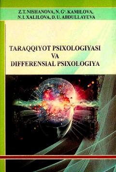

TPInsonning tug'ilishidan qarilik davrigacha bo'lgan psixologik rivojlanish xususiyatlarini o'rganuvchi darslik.
Mazkur darslikda taraqqiyot va differensial psixologiyaning predmeti, metodlari, bo'limlari hamda individual farqlar haqida so'z yuritiladi. Unda chaqaloqlik davridan qarilik davrigacha shaxsning psixologik rivojlanish xususiyatlari, individuallikning integral tavsifi va psixologik tafovutlar nazariyalari yoritilgan. Kitob talabalar, magistrlar, o'qituvchilar hamda tadqiqotchilar uchun mo'ljallangan.